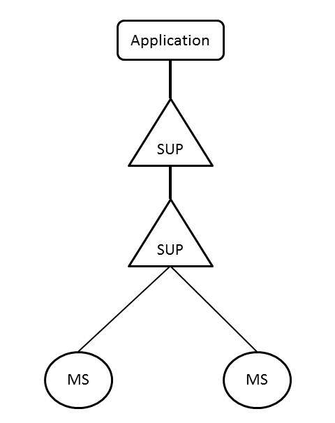

| Overview |  |
Copyright © 2012 ITI Egypt.
Authors: Marwa El-Shahed (marwa.elshahed@hotmail.com) [web site: http://www.iti.gov.eg].
MS Application
This application simulates the behaviour of the mobile station in the form of a finite state machine (ms_fsm) which is dynamically allocated to the supervisor (ms_fsm_sup) and the supervisor is the child of another supervisor (ms_sup) which is started with application (ms) itself.
This application is a simulation of mobile station.
N/A
APIs to be used will be explained later.
The configuration parameters are defined in the .config file. A sample configuration file is shown below:
[{appname, [{param, value}, {opt_param, opt_value}]}].

First, you need to start the application. Then, you can the APIs.
Generated by EDoc, Jun 17 2012, 16:54:25.